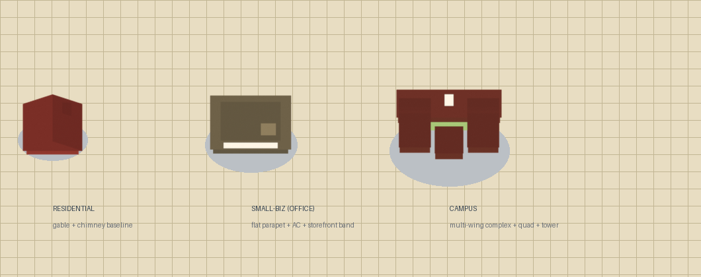
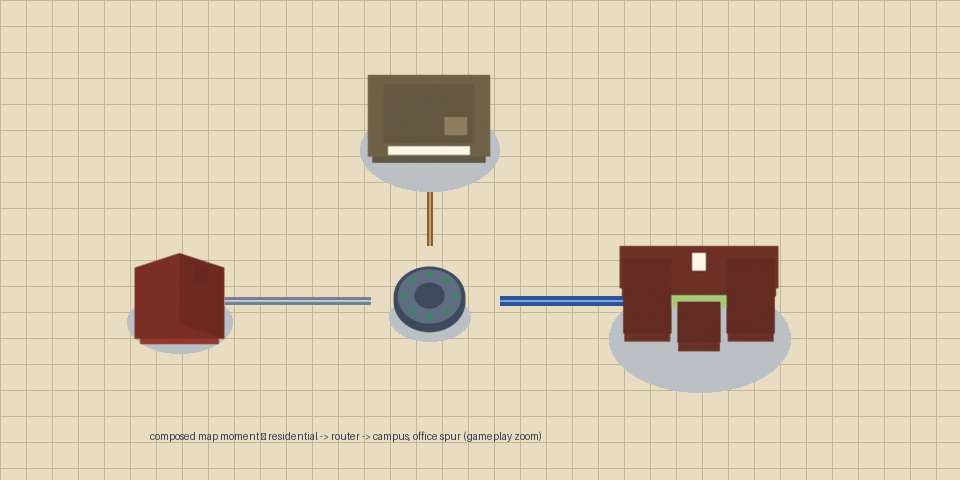

The trio — residential / small-biz / campus at gameplay zoom
Drawn from the actual shipped sprites at focus-zoom (~2.4×), with the game's contact-shadow ellipse on the canon cream canvas. Capacity ladder: campus > small-biz > residential — distinct silhouettes, not recolors.

Shape rationale — silhouette → role readability (E9.1, never color alone)
| Type | Silhouette language | Footprint (bbox) | Reads as… |
|---|---|---|---|
| Residential | two-tone gable roof + chimney, 4 cheerful colorways | 88×89 px (1.50 tiles) | the small home — source + sink |
| Small-biz (office) | NEW flat parapet roof (two-tone rim + darker inner panel), rooftop AC unit, cream storefront sign band | 120×87 px (proposed ~2.0 tiles) | a low-rise office — no gable, no chimney, no play-button; rectilinear flat block between the gabled home and the campus |
| Campus | NEW multi-wing complex: main hall + two side wings + center pavilion around a shallow quad, clock-tower marking | 154×103 px (proposed ~2.6 tiles) | the school/campus — the only multi-wing silhouette in the roster; the biggest terminal footprint |
palette: warm-stone office
brick campus
quad green
cream marking #FFF6E6
E9.1: distinct silhouette per type
In context — a composed map moment
A residential → router → campus street with a small-biz spur, at gameplay zoom: the shapes must hold up on a live map, next to routers and pipes.

Sprites + contact shadows are the real shipped assets; pipes use the canon tier colors (narrow copper / standard steel / wide fiber with core).
What's in the PR (data + provenance only — no game wiring)
| Artifact | Change | Scope |
|---|---|---|
assets/sprites/small_biz.png campus.png | 2 new sprites (256px, bbox sidecar) | data |
assets/sprites/sprites.json | order + content_bbox extended (11 entries; existing 9 byte-stable) | data |
app/render/sprites.odin | sheet loader mirror: SPRITE_COUNT 9→11 + files list (the loader contract with the manifest) | sheet data |
tools/gen_sprites.py | build_small_biz + build_campus (reproducible pipeline) | pipeline |
art-renders/blend-sources/pp_lib.py + .blend | the canon blend gains the models (clean naming) | provenance |
NOT touched (story 5.11's): Terminal_Role enum, role→sprite draw wiring, caps, growth — the 5.11 consumer note is in the PR. | ||
Your verdict (the gate)
The shapes were designed to read without color (E9.1). Iteration is welcome — annotate anything on this page, or pick a direction below and hit Queue this answer.
You can also annotate any element/text directly on the page and send via the conversation panel. Send & End closes the gate.
lavish gate — packet-plumber-terminal-assets-5.11 · canon: look-book v1 §2 + §6 (7.1 amendment) · gate verdict from 7.1 r4: “APPROVE — ship the top-down sprite direction as shown”